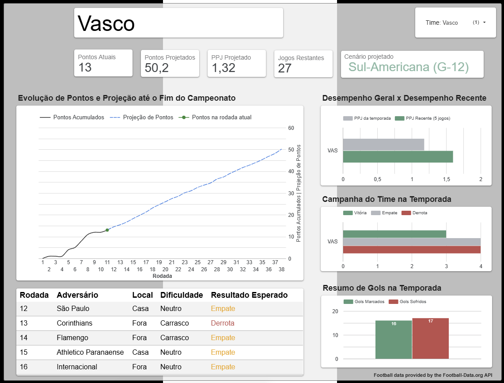
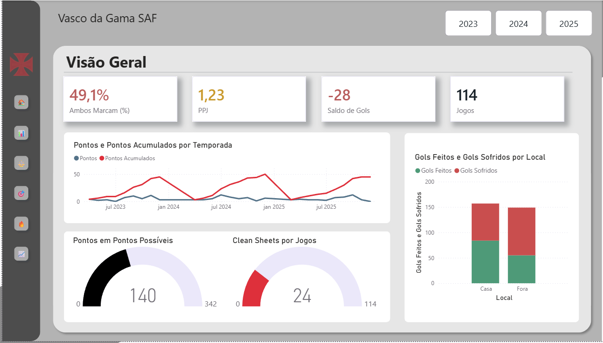

Brasileirão BI
Painel público com análise de desempenho, comparativos e projeções do campeonato, combinando pipeline automatizada, modelagem analítica e visualização interativa.
Sobre
Profissional de Dados com experiência em análise, BI e suporte à tomada de decisão, atuando com SQL, Python, Power BI e visualização de dados. Também desenvolvo projetos públicos aplicados ao futebol, com foco em transformar dados em análises acessíveis, comparações relevantes e apoio à tomada de decisão.
Projetos

Painel público com análise de desempenho, comparativos e projeções do campeonato, combinando pipeline automatizada, modelagem analítica e visualização interativa.

Projeto de visualização e acompanhamento analítico com foco em desempenho, tendências e leitura de contexto competitivo, com painel desenvolvido em Power BI.
O dashboard completo pode exigir autenticação no Power BI. Por isso, a prévia visual do projeto está disponível nesta página.
Stack
SQL, Python, Power BI, Looker Studio, BigQuery
Modelagem analítica, dashboards, automação e análise exploratória
BI esportivo, sports analytics e visualização de dados aplicada ao futebol